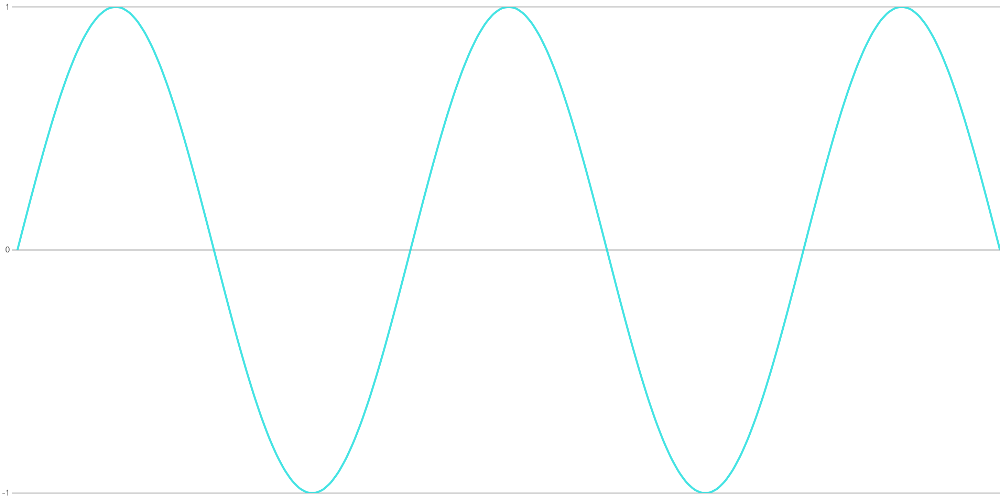
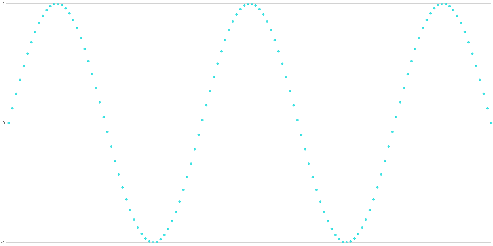
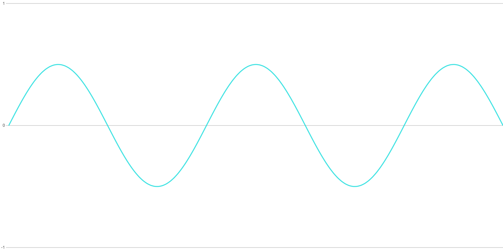
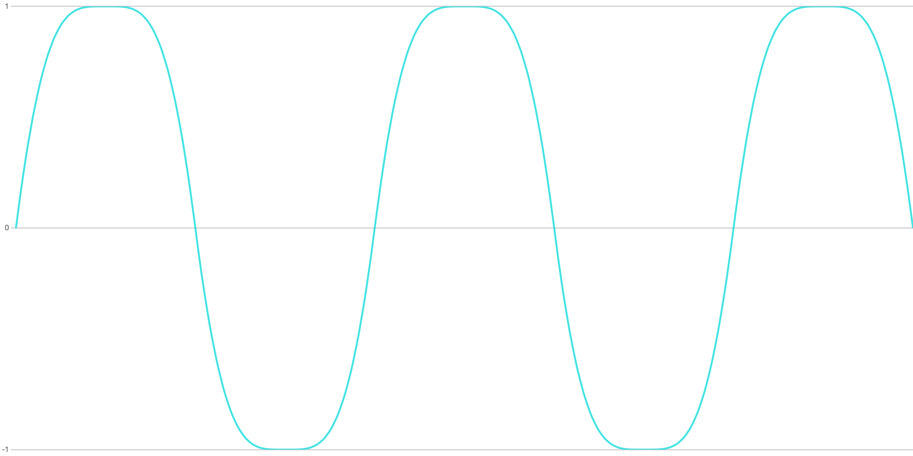
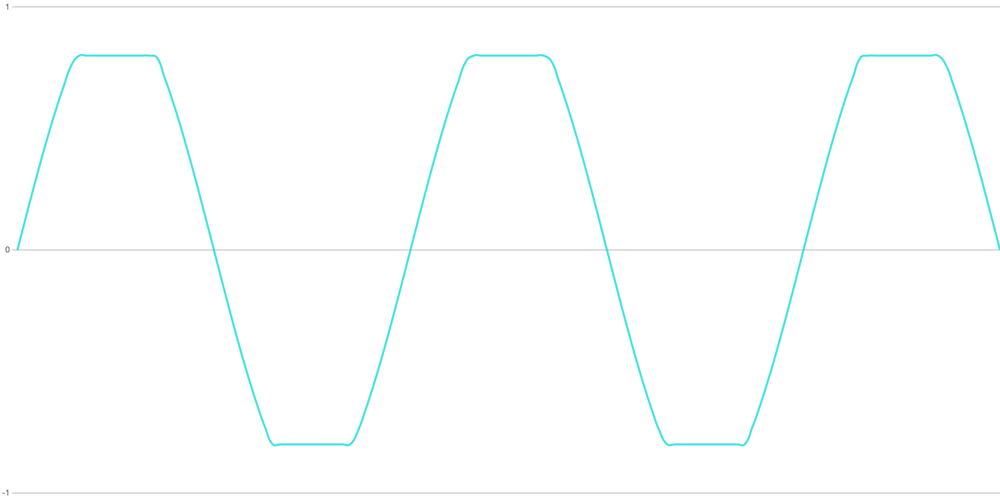
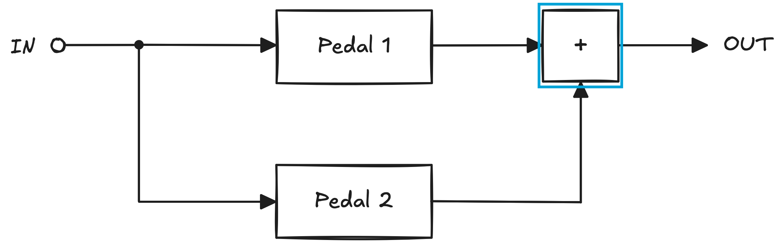
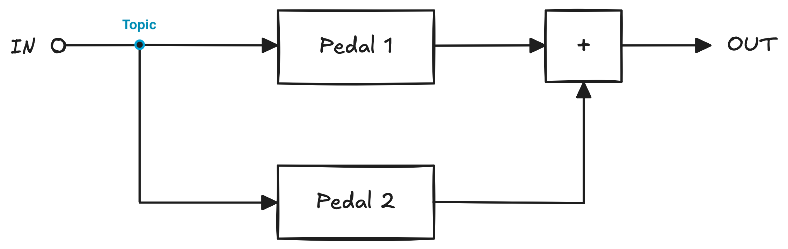
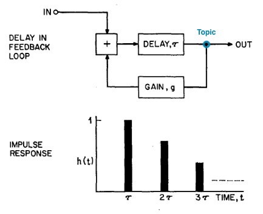

Scala and Arpeggio
Audio processing with Scala Native and FS2

Meet the Team


Sound


A Direct Approach
def process(in: InputStream, out: OutputStream): Unit =
val buffer: Array[Byte] = new Array[Byte](bufferSize)
while true do
val readBytes = in.read(buffer, 0, bufferSize)
f(buffer) // transform the data in the buffer in some way
out.write(buffer, 0, readBytes)
FS2
Stream[F[_], Element]
Chunk[Element]
Pipe[F[_], Element, Element2] = Stream[F, Element] => Stream[F, Element2]
trait AudioInterface[F[_]] {
def input: Stream[F, Float]
def output: Pipe[F, Float, Nothing]
}
type Pedal[F[_]] = Pipe[F, Float, Float]
Implementing an AudioInterface
def input: Stream[F, Float] =
Pull
.eval(F.blocking {
val inputBuffer = new Array[Float](FRAMES_PER_BUFFER)
functions.Pa_ReadStream(
stream = pStream,
buffer = inputBuffer.atUnsafe(0).toBytePointer,
frames = FRAMES_PER_BUFFER.toULong
)
Chunk.ArraySlice(inputBuffer, 0, FRAMES_PER_BUFFER)
})
.flatMap(Pull.output)
.streamNoScope
.repeat
def output: Pipe[F, Float, Nothing] =
_.chunkN(FRAMES_PER_BUFFER).foreach { chunk =>
val Chunk.ArraySlice(array, offset, length) =
chunk.toArraySlice
F.blocking {
functions.Pa_WriteStream(
stream = pStream,
buffer = array.atUnsafe(offset).toBytePointer,
frames = length.toULong
)
()
}
}
package arpeggio
import arpeggio.io.portaudio.PortAudioAudioInterface
import cats.effect.{IO, IOApp}
object Main extends IOApp.Simple:
def run: IO[Unit] = PortAudioAudioInterface
.resource[IO]
.use(interface =>
interface.input
.through(somePedal)
.through(someOtherPedal)
.through(interface.output)
.compile
.drain
)
Volume

def adjustLevel[F[_]](gain: Float): Pedal[F] =
_.map(_ * gain)
def sweep[F[_]](volumeControlStream: Stream[F, Float]): Pedal[F] =
_.zipWith(volumeControlStream)(_ * _)
Overdrive


def symmetricHardClipping[F[_]](threshold: Float): Pedal[F] =
_.map(sample =>
Math.min(
Math.max(sample, -threshold),
threshold)
)

Running pedals in parallel

given pointwiseAdd[F[_]]: Semigroup[Stream[F, Float]] =
new:
def combine(
x: Stream[F, Float],
y: Stream[F, Float]
): Stream[F, Float] =
x.zipWith(y)(_ + _)

given pointwiseAdd[F[_]]: Semigroup[Stream[F, Float]] =
new:
def combine(
x: Stream[F, Float],
y: Stream[F, Float]
): Stream[F, Float] =
x.zipWith(y)(_ + _)
def parallel[F[_]: Concurrent](
pedal1: Pedal[F],
pedal2: Pedal[F]
): Pedal[F] = stream =>
for {
topic <- Stream.eval(UnthrottledChunkedTopic[F, Float])
pedal1Output <-
Stream.resource(topic.subscribeAwait.map(pedal1))
pedal2Output <-
Stream.resource(topic.subscribeAwait.map(pedal2))
result <- (pedal1Output |+| pedal2Output)
.concurrently(stream.through(topic.publish))
} yield result
def blended[F[_]: Concurrent](
blend: Float,
threshold: Float
): Pedal[F] =
parallel(
adjustLevel(1 - blend),
symmetricClipping(threshold) andThen adjustLevel(blend)
)
Adding Guitar
package arpeggio
import arpeggio.io.portaudio.PortAudioAudioInterface
import cats.effect.{IO, IOApp}
object Main extends IOApp.Simple:
def run: IO[Unit] = PortAudioAudioInterface
.resource[IO]
.use(interface =>
interface.input
.through(pedals.overdrive.blended(blend = 0.8, threshold = 0.1))
.through(interface.output)
.compile
.drain
)
Reverb


def silence(time: Duration): Stream[Pure, Float] =
val timeInFrames = time.toMicros * SAMPLE_RATE / 1000000
Stream.constant(0f).take(timeInFrames.toLong)
def delayLine[F[_]: Concurrent](time: Duration): Pedal[F] =
silence(time) ++ _

def echoStage[F[_]: Concurrent](
repeatGain: Float,
delayTime: Duration
): Pedal[F] = stream =>
for {
topic <- Stream.eval(UnthrottledChunkedTopic[F, Float])
outStream <- Stream.resource(topic.subscribeAwait)
feedbackStream <- Stream.resource(
topic.subscribeAwait.map(adjustLevel(repeatGain))
)
out <- outStream
.concurrently(
(stream |+| feedbackStream)
.through(delayLine(delayTime))
.through(topic.publish)
)
} yield out


def allPassStage[F[_]: Concurrent](
repeatGain: Float,
delayTime: Duration
): Pedal[F] =
parallel(
adjustLevel(-repeatGain),
echoStage(repeatGain, delayTime)
.andThen(adjustLevel(1 - repeatGain * repeatGain))
)
def schroeder[F[_]: Concurrent](
predelay: Duration,
decay: Duration,
mix: Float
): Pedal[F] =
parallel(
identity,
parallel(
// Create 4 echo stages with differing delays and gain
Seq(1f, 1.17f, 1.34f, 1.5f)
.map(predelay * _)
.map(t => echoRepeats(gain(decay, t), t)): _*
)
.andThen(allPassStage(0.7, 5.millis))
.andThen(allPassStage(0.7, 1700.micros))
.andThen(adjustLevel(mix))
)
def gain(decay: Duration, predelay: Duration): Float =
Math.pow(2, (-3f * predelay.toMicros) / decay.toMicros).toFloat
Adding Guitar
package arpeggio
import arpeggio.io.portaudio.PortAudioAudioInterface
import arpeggio.pedals.reverb
import cats.effect.{IO, IOApp}
object Main extends IOApp.Simple:
def run: IO[Unit] = PortAudioAudioInterface
.resource[IO]
.use(interface =>
interface.input
.through(
reverb.schroeder(predelay = 30.millis, decay = 1.second, mix = 0.7)
)
.through(interface.output)
.compile
.drain
)